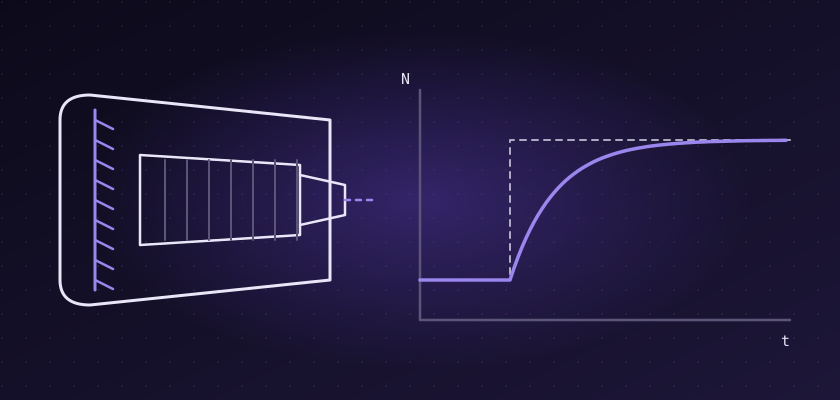

Commande & régulation
Commande de la vitesse d’un turboréacteur
Identification du système, puis synthèse et comparaison de correcteurs PID et IMC pour réguler la vitesse de la turbine.
Voir le projet →
Commande & régulation
Commande de la vitesse d’un turboréacteur
Objectif
Réguler la vitesse de la turbine haute pression d’un turboréacteur en agissant sur le débit de kérosène, puis concevoir et comparer plusieurs stratégies de commande.
Ce que j’ai réalisé
- Identification du système à partir d’un essai en boucle ouverte : modèle du premier ordre avec retard (méthode de Broïda), validé par comparaison avec la réponse réelle.
- Commande en boucle ouverte à partir de la caractéristique statique (table de correspondance).
- Synthèse de correcteurs PID par la méthode de Broïda et par placement de pôles, avec anti-windup, pré-filtre de consigne et étude du bruit de mesure.
- Commande à modèle interne (IMC) : mise en place et étude du réglage du filtre et de l’anti-windup.
Résultat
Le PID final (anti-windup + pré-filtre) suit chaque changement de consigne sur toute la plage testée, sans dépassement, avec une commande de kérosène qui reste dans ses limites.